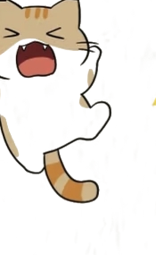
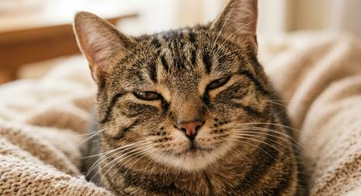
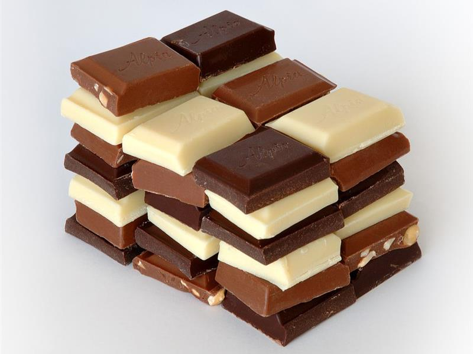
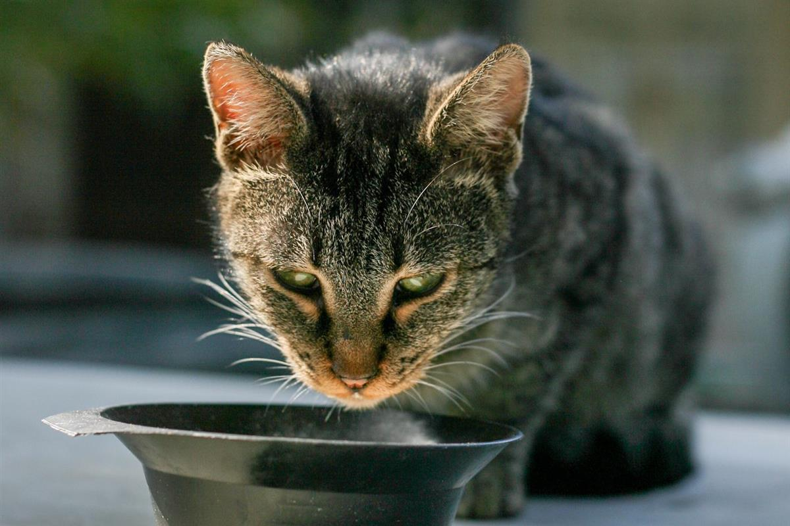
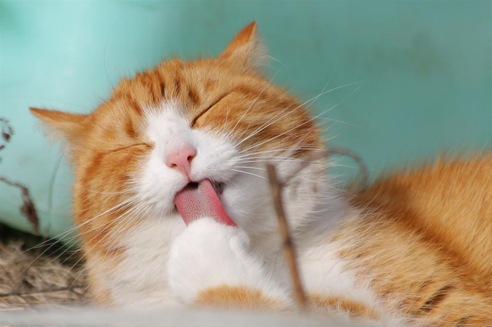
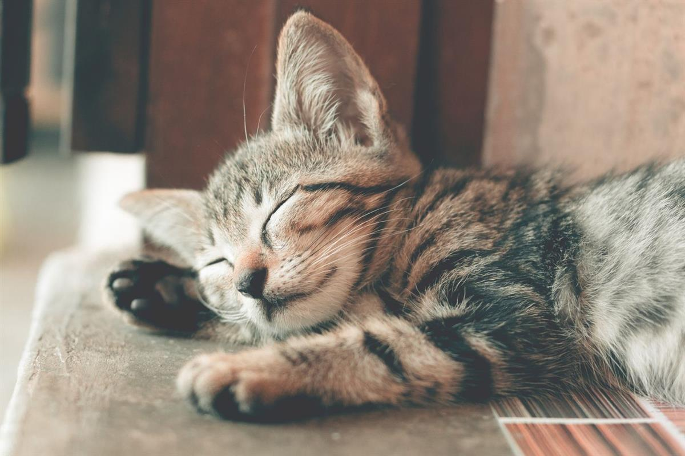

屿猫把品种、性格和喂养方法整理在一起。慢慢看，不用急着选。
十二种猫咪 · 六册手记 · 每周更新

从英短、布偶到缅因、暹罗，短毛、长毛、无毛，橘色、银渐层、重点色——先在图谱里认脸，再去档案里看性格、饲养要点和适合人群。其中十二种已经整理成完整档案。
从日常养护到饮水、梳毛和疫苗，把会遇到的事提前放在一起。
饮食、饮水、猫砂、居住环境与健康管理，一天一天把猫照顾好。

叫声、尾巴和日常动作都在说话。读懂信号，少一点误会。


猫不爱喝水，泌尿问题往往来得突然。从水碗、尿团和猫砂盆开始观察。

不同毛长怎么梳、多久洗一次、掉毛和毛球怎么处理，一次说清。

疫苗时间表、驱虫频率和体检项目，提前记下来，少一点手忙脚乱。
三步走完，先确认彼此合适，再把它接回家。
看品种档案，也看自己的居住空间、在家时间和家人意见。性格合拍比长相重要。
留下联系方式、居住情况和养猫经验，我们会根据条件帮你匹配，而不是先到先得。
确认封窗、猫砂盆位置和家人共识，准备好猫粮与猫窝，再约时间接它回家。
答案不长，但每一条都来自真实养猫场景。
猫砂盆、猫砂、猫粮、水碗、猫窝、猫抓板和航空箱是基础七件。封好窗户、收好线和塑料袋，比买多少玩具都重要。
英短、美短这类中型短毛猫更适应公寓；布偶粘人，需要更多陪伴；橘猫活泼，最好留出每天陪玩的时间。
短毛猫每周梳两三次，长毛猫每天梳。换毛季增加频率，同时准备粘毛滚筒和空气净化器，比频繁洗澡更有效。
幼猫需要更多时间照顾和疫苗流程；性格稳定的成猫更适合上班族。领养时优先看性格与健康，而不是只看年龄。
除了品种和手记，还有几个可以慢慢逛的新页面。
给猫起个名字、抽一张今日猫咪签，或者随机认识一只新猫。